Para la instalación del servidor FTP seguimos los siguientes pasos:
1. Verificamos estar como súper usuario, e instalamos FTP mediante el comando “yum -y install vsftp”.
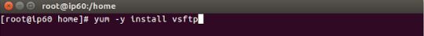
2. Accedemos al archivo de configuración de FTP el cual se encuentra en la ruta “/etc/vsftpd/vsftpd.conf”
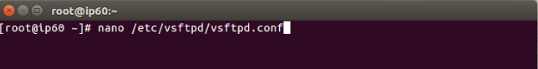
3. Se descomenta la opción de la conexión de un usuario ftp anónimo colocando NO en la opcion “anonymous_enable”
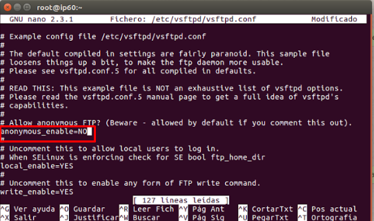
Nota:: A diferencia de la instalación en sistemas basados en debían, en Centos 7 las opciones de un usuario autenticado ya vienen habilitadas por lo cual no hay que modificarlas.
4. Con el siguiente comando se da permiso a FTP para que se pueda ejecutar de manera correcta y realice todas las operaciones necesarias.
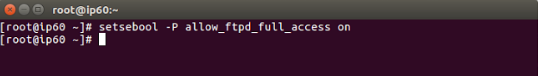
5. Este paso mediante el comando “setsebool -P ftp_home_dir on” se le da permiso a FTP para que escriba, lea y guarde en su directorio predeterminado.
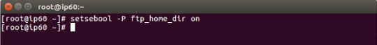
Nota:: Atodo se trabaja bajo el comando “setsebool” debido a que es un comando que manera SELinux el cual es una mejora a la seguridad de muchos sistemas operativos modernos como Centos
6. Ahora añadimos un nuevo usuario FTP llamado “ftpuser”
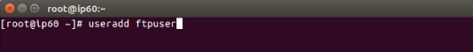
7. Se asigna una contraseña al usuario FTP creado anteriormente
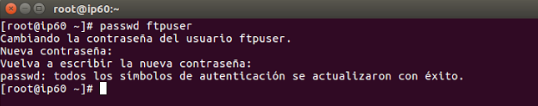
8. Se arranca el servicio de FTP por medio del comando “systemctl start vsftpd”.
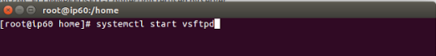
9. Se corrobora que la acción anterior se halla ejecutado correctamente.
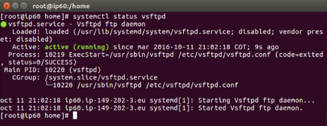
10. Activamos a ftp para que se inicie cada vez que el sistema arranque.
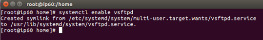
Nota:Por último, se descarga un cliente FTP, puede usarse FileZilla “https://filezilla-project.org/”, se descarga e instala y se ingresan los datos del servidor como dirección IP, nombre de usuario y contraseña. De esta manera se puede realizar la trasferencia de archivos mediante FTP de manera exitosa.
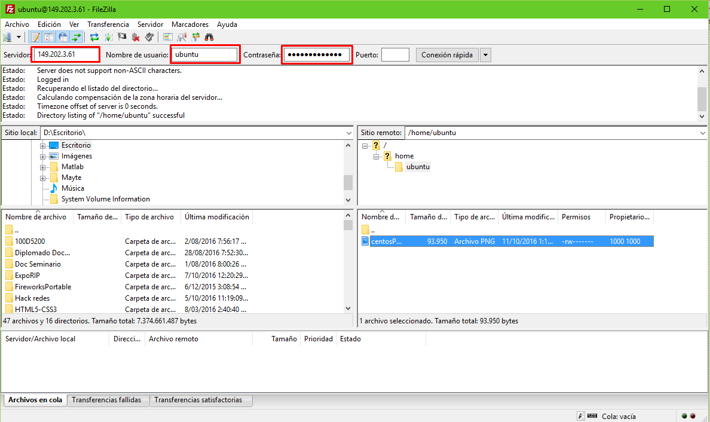